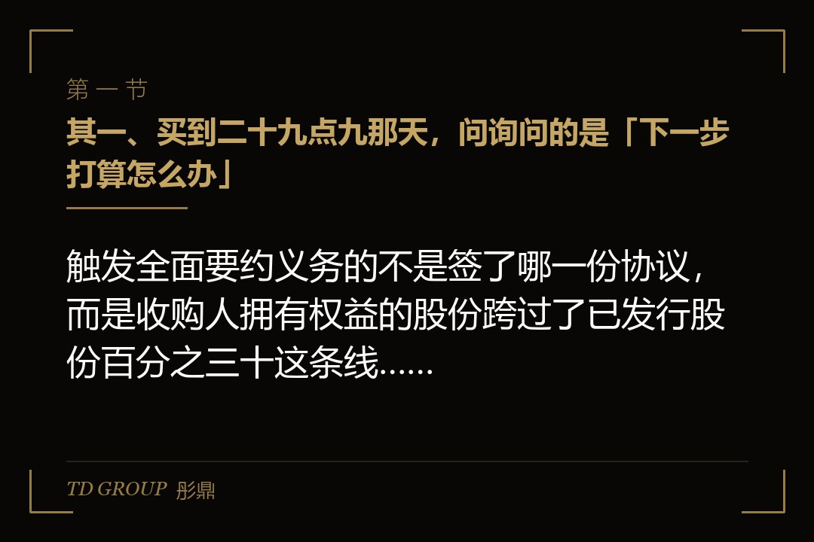
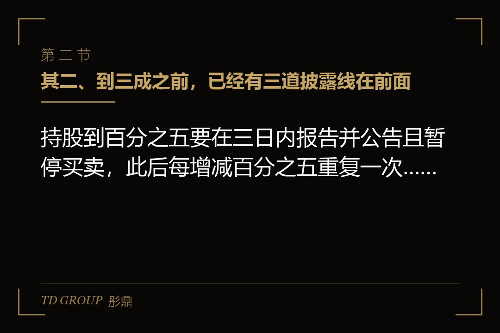
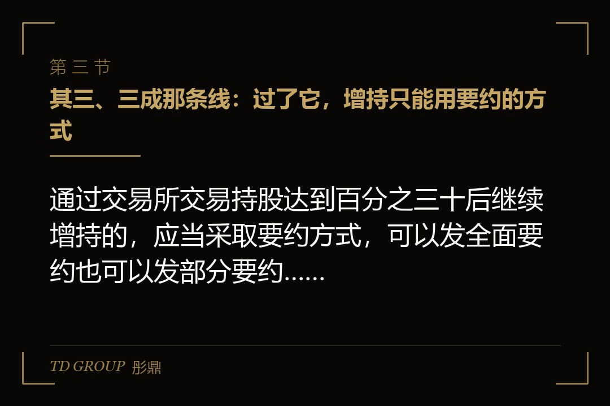

其一、买到二十九点九那天，问询问的是「下一步打算怎么办」

结论先行：触发全面要约义务的不是签了哪一份协议，而是收购人拥有权益的股份跨过了已发行股份百分之三十这条线，跨过之后再增持就要走要约。
假设有家在深市主板上市的工业阀门公司，总股本八亿股，创始人一家合计持股百分之三十三。一家做流体设备的产业方从前一年开始通过证券交易所买进它的股票，一路买到百分之二十九点九，然后停住，再没动过。
交易所的关注函问了三件事：这家产业方与公司现有股东之间有没有一致行动关系；买股票的资金从哪里来；未来十二个月有没有继续增持或者谋求控制权的打算。前两件是事实，第三件是打算，而打算一旦写进公告，后面的每一步都要拿来对照。
公司这边的董事会也在开会。他们要定的是：把这件事当成一次财务性的持股，还是当成一次控制权的争夺。两种判断对应的应对完全不同，而判断的依据就是对方还差多远到那条线，以及跨过去之后他要付出什么。
这一篇就按这条线来拆：线之前有哪几道披露义务，线上那一下会发生什么，哪几条路可以不发要约，要约价的底怎么算，以及不想触发的一方该怎么排节奏。
其二、到三成之前，已经有三道披露线在前面

结论先行：持股到百分之五要在三日内报告并公告且暂停买卖，此后每增减百分之五重复一次，百分之五之上每变动百分之一还要在次日通知公司并公告。
《证券法》定的那道线是百分之五。投资者与一致行动人合计持有一家上市公司已发行的有表决权股份达到百分之五时，要在事实发生之日起三日内向证监会和证券交易所书面报告、通知该上市公司并予公告，在这三日内不得再买卖该公司股票。
此后每增加或者减少百分之五，同样要报告并公告，从该事实发生之日起至公告后三日内不得再买卖。违反规定买进的，超过规定比例的那部分股份在买进后三十六个月内不得行使表决权——这一条打的是既成事实，事后补公告也补不回来。
《上市公司收购管理办法》在这之上加了一道更密的：投资者及其一致行动人拥有权益的股份达到百分之五之后，通过交易所交易每增加或者减少百分之一的，要在该事实发生的次日通知上市公司并予公告。这一道不用停手，但是要说话。
报告的详略也是分档的。达到百分之五但没到百分之二十的，编制简式权益变动报告书；达到或者超过百分之二十但没超过百分之三十的，编制详式权益变动报告书，内容要写到控股结构、取得股份的价格与资金来源、同业竞争情况与后续安排。
回到那家阀门公司：那位产业方在百分之二十九点九停住，意味着它已经交过一份详式权益变动报告书。它在报告书里写下的「未来十二个月增持计划」，就是后面所有人判断它意图的起点。
其三、三成那条线：过了它，增持只能用要约的方式

结论先行：通过交易所交易持股达到百分之三十后继续增持的，应当采取要约方式，可以发全面要约也可以发部分要约，而部分要约的预定比例不得低于百分之五。
《收购管理办法》第二十四条的表述很直接：通过证券交易所的证券交易，收购人持有一个上市公司的股份达到该公司已发行股份的百分之三十时，继续增持股份的，应当采取要约方式进行。协议收购走到同一条线上，第四十七条给的是同一个结论。
这条线算的是「拥有权益的股份」，不是户头上那几笔股票。直接持有的、通过关联主体间接控制的、与一致行动人合计的，都要加进来。实务里最常见的意外，是把一致行动人算漏了，协议签完才发现合计早就过了线。
要约有两种形态。全面要约是向全体股东发出，买下他们愿意卖的全部股份；部分要约只买一个预定比例，而这个预定收购的比例不得低于该公司已发行股份的百分之五。预受的股份超过预定收购数量时，按同等比例收购。
为什么这条线设在这里：百分之三十在多数股权分散的公司里已经足以形成实际控制，制度上要求走到这一步就给其余股东一个按同等条件退出的机会。所以它不是一道审批，是一道价格承诺——你要继续买，就得按同一个价格向所有人开口。
关键在于触发之后成本结构整个变了。原来是按市场价格一笔一笔买，触发之后是先算好一个价格、备足钱、面向全体股东开口，而对方愿意卖多少，不由收购人决定。
其四、不发要约也能过去：免于发出要约的两组路
结论先行：免于发出要约不是一次审批，而是符合规定情形就可以不发，常见的有同一控制人内部转让、财务困难公司的重组、股东会同意的定向发行和缓步增持。
二〇二〇年那次修订之后，要约豁免的行政许可取消了，规则改成列举情形：符合的就可以免于发出要约，不再逐单去批。路径大体分成两组，区别在于它们落在什么场景上。
一组在第六十二条，落在主动安排的场景上：收购人与出让人能够证明本次股份转让是在同一实际控制人控制的不同主体之间进行的；上市公司面临严重财务困难，收购人提出的挽救方案经股东会批准且承诺三年内不转让其在该公司中拥有的权益；经股东会非关联股东批准，收购人取得上市公司向其发行的新股而超过百分之三十，承诺三年内不转让，且股东会同意其免于发出要约。
另一组在第六十三条，落在被动或者法定的场景上：经政府或者国有资产管理部门批准进行国有资产无偿划转、变更、合并；上市公司按股东会批准的价格回购股份而减少股本，导致当事人持股被动超过百分之三十；银行等金融机构在承销、贷款等业务中被动持股超过百分之三十、没有实际控制的意图并提出转让方案；因继承而超过百分之三十。
这一组里对产业方最有用的是那条缓步增持：拥有权益的股份达到或者超过百分之三十的，自该事实发生之日起满一年后，每十二个月内增持不超过该公司已发行股份的百分之二。它把「继续买」拉成了一条很慢的路，但确实是一条路。
还有一条落在百分之五十之上：拥有权益的股份达到或者超过已发行股份的百分之五十之后，继续增加权益而不影响该公司上市地位的，也可以免于发出要约。到了这一档，制度关心的已经不是控制权归谁，而是公众持股还够不够。
其五、要约价的底：六个月最高价，和三十个交易日那道说明题
结论先行：同一种类股票的要约价格，不得低于要约收购提示性公告日前六个月内收购人取得该种股票所支付的最高价格，这是一条不能往下压的底。
这条底线的意思是，收购人在前六个月里买过的最贵的那一笔，定义了他将来要向所有人开出的价格。所以那家产业方在停手之前的每一笔买进，都是在为一次可能发出的要约打价格的桩。
另一道是说明义务。要约价格低于提示性公告日前三十个交易日该种股票每日加权平均价格的算术平均值的，收购人聘请的财务顾问要就该股票前六个月的交易情况进行分析，说明是否存在异常交易、收购人有没有未披露的一致行动人、前六个月取得股份是不是还有其他支付安排、要约价格是否合理。
还有一道是钱要备好。作出要约收购提示性公告的同时，收购人要提供履约能力的保证安排，可选的有三种：把不低于收购价款总额百分之二十的资金作为履约保证金存入登记结算机构指定的银行账户；由银行出具保函；由财务顾问出具承诺并承担连带保证责任。
支付方式可以是现金、证券，或者现金与证券相结合。以证券支付的，要提供该证券的财务报告与估值报告，因为对方拿到的不是钱，是另一家公司的股份，估值这一步躲不掉。
对企业方的含义很实在：从决定「要往上买」的那天起，每一笔买进的价格就不只是这一笔的成本，它同时是将来面向全体股东的报价下限。不少方案在这一步崩掉，不是因为没钱，是因为前六个月买贵过一次。
其六、要约发出去之后：期限、撤回、按比例，和公众持股那条尾巴
结论先行：要约期限不得少于三十日、不得超过六十日，预受股东在期限届满前三个交易日内不得撤回，预受超过预定数量的按同等比例收购。
期限是三十日到六十日，出现竞争要约的除外。这段时间里收购人不能随意改条件，要约收购报告书所披露的基本事实发生重大变化的，要在该重大变化发生之日起两个工作日内作出公告。
预受是一个可以反悔的动作，但反悔有窗口。预受股东可以在要约期限内撤回预受，只是在期限届满前三个交易日内不得撤回——这三天是留给收购人算账的，算完就没有变数了。
部分要约还有一道按比例。收购期限届满，预受要约的股份数量超过预定收购数量的，收购人按同等比例收购预受的股份。这意味着发部分要约的人要提前想清楚：预定比例定低了买不够，定高了钱要备足。
真正容易被忽略的是尾巴。要约完成后公司的股权分布不再符合上市交易条件的，余下的股东有权在合理期限内按同等条件向收购人出售股票，收购人应当收购。所以全面要约有两种收场：公众持股还够，公司留在场内；不够，那就是往终止上市方向走的另一件事了。
还有一条锁：收购人持有的被收购公司股份，在收购完成后十八个月内不得转让；在同一实际控制人控制的不同主体之间转让的不受这一条限制。买进来之后要拿住一年半，这笔钱的期限从一开始就该按十八个月往上算。
其七、不想触发的，节奏要在动手之前排
结论先行：不想触发全面要约义务，能用的动作只有三样：把线之下的比例定死、把增持拆到免于发出要约的路径上、把一致行动关系算清楚。
先看那家阀门公司的另一面。创始人一家持股百分之三十三，如果要向那位产业方转让一部分，转多少是有讲究的：转让后对方合计拥有的权益是否跨过百分之三十，决定了这是一笔普通的协议转让，还是一笔要配要约的收购。
再假设一个常见场景：一家民营公司的控股股东想引入有产业背景的战略方，双方谈的是先转让百分之二十九、剩下的看后续进展。这个数字不是随手定的，它留出的是「先不触发、再看清楚」的余地。代价是控制权在一段时间里是模糊的，而模糊要靠协议里的表决权安排去补。
另一种做法是走定向发行。经股东会非关联股东批准，投资者取得上市公司向其发行的新股而超过百分之三十，承诺三年内不转让，且股东会同意其免于发出要约。这条路把钱留在了公司里，而不是付给老股东，所以在公司本身缺钱的时候更常被用到。
一致行动关系是最容易算错的一项。自然人之间的亲属关系、共同投资、在同一主体任职、签过表决权委托或者一致行动协议，都会被合并计算。方案做到一半才发现合计早就过线，前面所有的时间表都要推倒重排。
收口的判断是这样：过不过那条线，本质上是在问一句「愿不愿意向所有股东开出同一个价格」。愿意，就把前六个月的最高价算清楚、把钱备足、把时间表按三十到六十日排开；不愿意，就把比例停在线下，把控制力放到表决权安排和董事席位上去谈。